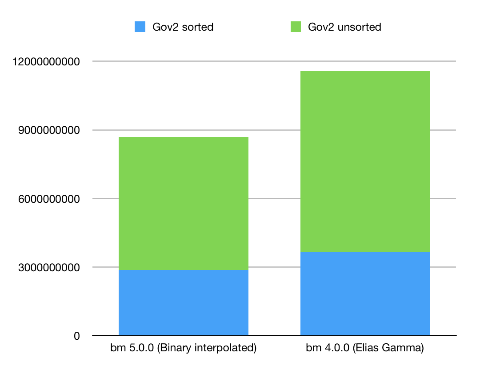

Version 5.0.0
July 20, 2019Release Notes
- Fixed crash related to agressive -O3 optimizations on GCC
-
Implemented new algorithm: lower_bound search for integer in
bit-transposed container:
bm::sparse_vector_scanner<>::lower_bound()Documented as an API sample: svsample07.cpp - New compressed serialization of bit-vectors using Binary Interpolated Encoding (Center Minimal). Tested on Gov2 collection it gives approximately 25% improvement in disk footprint comparing to previous version which was using Delta Elias Gamma encoder. New serialization is backward compatible, BitMagic will read old BLOBs. New serialization default is level 5. If you like to keep using Elias Gamma - use level 4.
Figure below illustrates new compression numbers using two Gov2 inverted list benchmark sets, sorted and unsorted.
Acknowledgements
While working on version 5 we used benchmarking sets provided by Daniel Lemire and Leonid Boytsov.